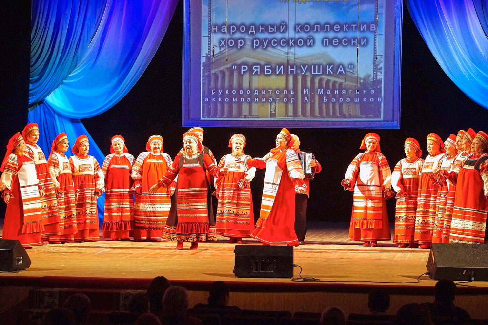

Народный коллектив хор русской песни «Рябинушка», фольклорный ансамбль «Вечорка»
Хор русской песни «Рябинушка» создан в январе 1960 года на базе цеховых коллективов оптико-механического завода. В мае того же года состоялось первое выступление хора на смотре художественной самодеятельности, отмеченное районной прессой, как яркое и запоминающееся.В 1982 году за успешное выступление на ВДНХ хор «Рябинушка» награжден Дипломом ВДНХ СССР, в том же году хору вручена Грамота ВЦСПС. В 1983 году Постановлением Президиума МОСПС коллективу присвоено звание «Народный». С 1987 года хором руководит выпускница ЛГИКа им. Н.К. Крупской Манягина Ирина Юрьевна. В 1993 году создается ансамбль-спутник фольклорный ансамбль «Вечорка», работа которого направлена на более глубокое изучение участниками фольклорного материала.

Все годы работы коллектива богаты на события и награды – Дипломы районных Фестивалей «Солнцеворот», «Праздник казачьей культуры», «Любовь моя, Россия» и др., а также Дипломы Московского областного Фестиваля народных хоров «Коломенские зори» вошли в копилку заслуг хора, по-прежнему любимого и почитаемого зрителями. Осенью 2014 года, в рамках проходящего Года культуры, хор принял участие в Московском областном конкурсе-фестивале «Битва хоров», где занял 1 место, получив возможность принять участие в его международном этапе. Заключительный тур конкурса, в котором приняли участие коллективы из Сербии, Словении, Чувашии, Мордовии и городов России состоялся в Сергиевом Посаде 25 ноября, хор «Рябинушка» получил Диплом Международного Фестиваля – конкурса и выиграл приз зрительских симпатий.
В июне 2015 г.- на Областном фестивале хоровых коллективов Подмосковья «Коломенские зори» коллектив получил звание Лауреата I степени и был признан одним из лучших хоров Московской области.
Коллектив планомерно работает над исполнительским мастерством, бережно сохраняет традиции русского пения. Хор обновляется, появляются новые солисты. У хора и ансамбля «Вечорка» обширный репертуар, включающий песни разных областей России, обрядовые, календарные, бытовые, городские романсы. В концертах и вечерах фольклора используются элементы театрализации, народные игры и забавы. Неоднократно отмеченный прессой города и любимый публикой коллектив — постоянный участник всех значимых мероприятий города: профессиональных праздников, новогодних, Рождественских, Масленичных, Троицких концертов, Дней города, юбилейных и других торжеств. В коллективе занимаются талантливые и очень музыкальные люди, влюбленные в народную песню. Есть свои солисты, обладающие незаурядными способностями, яркими голосами, и, несомненно, большим талантом. Концертмейстер коллектива – талантливый музыкант Анатолий Барашков.